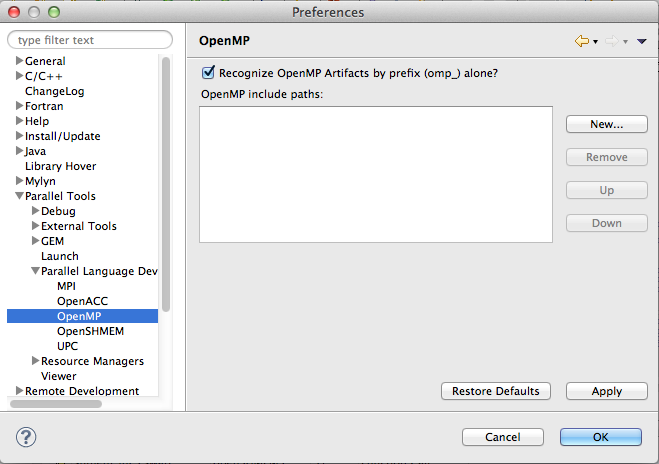
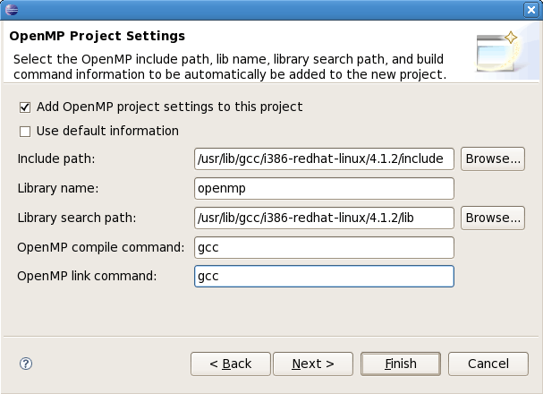
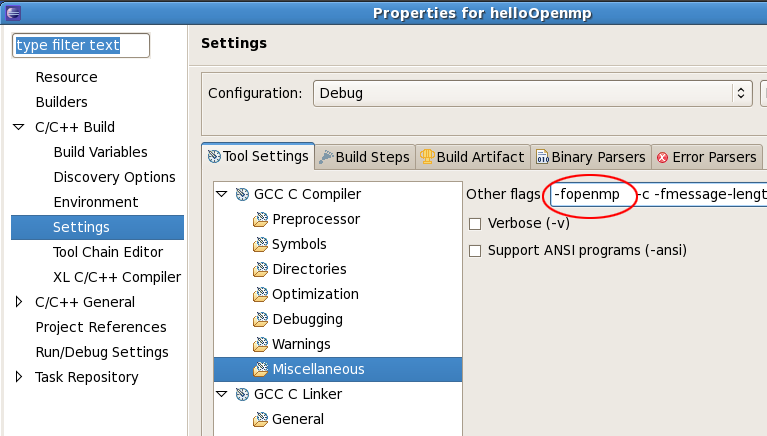

The basic setup for the OpenMP tools is the same as for the MPI tools setup. Essentially, point CDT at the header files and at the command to call your compiler with the OpenMP information.
The OpenMP preferences should be set to point to your OpenMP header file. If you don't set this up prior to using the New Project Wizard to make an OpenMP project, you will be prompted to do so at that time.
Note: As of PTP 6.0 and later, this is now optional and the setting for "Recognize OpenMP Artifacts by Prefix (omp_) alone?"
is now true by default. If this option is true, header files are not need to find OpenMP artifacts.
If you do include header file location, they will automatically be added to the project include path,
which may help in static analysis and other Eclipse features.

The PLDT new project wizards now contain wizards for creating OpenMP projects as well.
Be sure on the project settings page that everything is filled in, including the build command.
Most of these values are calculated based on your entries in the PLDT preferences pages.

You may need to manually alter the project build properties (in the project properties) to add compiler flags
(specific to your OpenMP compiler) to your project.
Check the settings in your project, they may not match the information shown here.

You probably need to do this for the Linker as well as the Compiler option.
Now set up to run the OpenMP features.